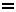

*hom/o PV
*homo, *homoj [1] ↝
 Genro el familio homedoj
(Homo), el kiu plu nur vivas la specio
Homo sapiens, plej evoluinta
vivaĵo
de
la tero, karakterizata per vertikala teniĝo, racia
inteligenteco kaj parolkapablo:
homoj ne ĉiam racie agas;
ĉiu homo amas sin mem
[2];
la homoj ne komprenas unu la alian kaj tial ili tenas sin
fremde unu kontraŭ la alia[3];
la pronomon "li" ni povas uzi por homo en ĉiu okazo,
kiam
la sekso estas por ni indiferantaLR
.
Genro el familio homedoj
(Homo), el kiu plu nur vivas la specio
Homo sapiens, plej evoluinta
vivaĵo
de
la tero, karakterizata per vertikala teniĝo, racia
inteligenteco kaj parolkapablo:
homoj ne ĉiam racie agas;
ĉiu homo amas sin mem
[2];
la homoj ne komprenas unu la alian kaj tial ili tenas sin
fremde unu kontraŭ la alia[3];
la pronomon "li" ni povas uzi por homo en ĉiu okazo,
kiam
la sekso estas por ni indiferantaLR
.
 viroantropologio,
arto,
historio,
medicino,
menso,
religio,
scienco 2,
socio 1,
teĥniko
viroantropologio,
arto,
historio,
medicino,
menso,
religio,
scienco 2,
socio 1,
teĥniko
1.
L. L. Zamenhof: Fundamento de Esperanto, Universala Vortaro,
-j
2. L. L. Zamenhof: Fundamento de Esperanto, Ekzercaro, § 18
3. Zamenhof: El la unua libro de la lingvo Esperanto.
2. L. L. Zamenhof: Fundamento de Esperanto, Ekzercaro, § 18
3. Zamenhof: El la unua libro de la lingvo Esperanto.
- angle:
- human ~oj: people, humans
- bretone:
- den, mab-den ~oj: tud
- ĉeĥe:
- člověk
- ĉine:
- 人 [rén]
- filipine:
- lalaki, tao
- france:
- être humain, homme (être humain), humain (subst.) ~oj: gens
- germane:
- Mensch ~oj: Leute
- greke:
- άνθρωπος
- hebree:
- אדם, בן אדם, בן אנוש
- hispane:
- hombre (ser humano), humano ~oj: gente
- hungare:
- ember ~oj: az emberek
- ide:
- homo ~oj: homi
- indonezie:
- manusia
- itale:
- uomo ~oj: gente
- japane:
- 人 [ひと]
- latinece:
- Homo, Homo sapiens
- nederlande:
- mens ~oj: mensen
- okcidentfrise:
- minske ~oj: minsken
- pole:
- człowiek ~oj: ludzie
- portugale:
- homem (ser humando)
- ruse:
- человек
- slovake:
- človek, nehnevaj sa (hra), človeče ~oj: ľudia
- taje:
- คน, มนุษย์
- tokipone:
- jan ~oj: jan
- volapuke:
- men ~oj: mens
*homa [4]
- De homo: la homa parolo; homaj kadavroj; faritaĵo de homaj manoj [5]; la nehomaj krioj de lia edzino [6].
4.
L. L. Zamenhof: Fundamento de Esperanto, Universala Vortaro, -a
5. trad. L. L. Zamenhof: La Malnova Testamento, Psalmaro 135:15
6. B. Prus, trad. Kazimierz Bein: La Faraono, vol. 1, ĉapitro 12a
5. trad. L. L. Zamenhof: La Malnova Testamento, Psalmaro 135:15
6. B. Prus, trad. Kazimierz Bein: La Faraono, vol. 1, ĉapitro 12a
- bretone:
- -den, denel
- ĉeĥe:
- lidský
- france:
- humain (relatif à l'être humain) ne~aj: inhumain
- germane:
- menschlich
- greke:
- ανθρώπινος
- hebree:
- אנושי
- hispane:
- humano
- hungare:
- emberi
- ide:
- homala
- itale:
- umano
- kurde:
- mirov
- nederlande:
- menselijk
- okcidentfrise:
- minsklik
- pole:
- człowieczy, ludzki
- portugale:
- humano
- ruse:
- человеческий ne~aj: нечеловеческий
- slovake:
- ľudský
- tokipone:
- jan
- turke:
- insan, insan oğlu
- volapuke:
- menik
homaro ↝
- La tuta homa gento: grandegan signifon havus por la homaro la enkonduko de unu komune akceptita lingvo [7].
7.
Ludoviko Lazaro Zamenhof: Fundamenta Krestomatio de la lingvo Esperanto, 6, artikoloj pri esperanto, el la
unua
libro de la lingvo esperanto
- angle:
- humanity
- bretone:
- denelezh
- ĉeĥe:
- lidstvo
- ĉine:
- 人类 (tr. 人類) [rénlèi]
- france:
- genre humain, humanité (genre humain)
- germane:
- Menschheit
- greke:
- ανθρωπότητα
- hebree:
- האנושות
- hispane:
- humanidad
- hungare:
- emberiség
- ide:
- homaro
- indonezie:
- umat manusia
- itale:
- genere umano, umanità (genere umano)
- nederlande:
- mensheid
- pole:
- ludzkość
- portugale:
- humanidade
- ruse:
- человечество
- slovake:
- ľudstvo
- turke:
- insanlık
- volapuke:
- menät
homaranismo ↝
 Doktrino postulanta, ke ĉiu rigardu kaj amu
ĉiulandajn
homojn kiel siajn fratojn.
Doktrino postulanta, ke ĉiu rigardu kaj amu
ĉiulandajn
homojn kiel siajn fratojn.
- ĉeĥe:
- kosmopolitizmus, světoobčanství
- france:
- homaranisme
- germane:
- Humanismus
- hungare:
- homaranizmus
- indonezie:
- humanisme
- itale:
- homanarismo
- pole:
- hilelism
- ruse:
- хомаранизм, гиллелизм
- slovake:
- humanizmus, svetoobčianstvo
homeco
- 1.
-
La eco esti homo, aparteni al la homa gento, uleco:
depost la momento, en kiu mi perdis la kredon pri mia
homeco, miaj suferoj finiĝis
Marta
;
en sia demando la legantino mencias (ne)homecon de la
aganto
[8];
 la homeco kaj la dieco de Jesuo Kristo.
la homeco kaj la dieco de Jesuo Kristo.
- 2.
- La supozataj trajtoj de „nedifektita“ homa naturo (kompatemo, helpemo, bonfaremo): Vi pensas, ke la skito la barbara Aŭskultos tiun voĉon de la vero Kaj de l' homeco, kiun ne aŭskultis La grek' Atreo? [9]; kiel migranta, senhejma apostolo de libero kaj homeco mi montrus al ili la gvidstelon [10].
8.
S. Pokrovskij: Ĉu «de» aŭ
«per»?, La Ondo de Esperanto, 1999:5 (55)
9. Goeto, tr. Zamenhof: Ifigenio en Taŭrido, 5:3
10. Stellan Engholm: Vivo vokas
9. Goeto, tr. Zamenhof: Ifigenio en Taŭrido, 5:3
10. Stellan Engholm: Vivo vokas
- ĉeĥe:
- lidskost, lidství
- germane:
- 1. Menschsein 2. Menschlichkeit
- indonezie:
- 2. kemanusiaan
- ruse:
- 1. человечность, человечество (как качество), одушевлённость (грам.) 2. человечность
- slovake:
- ľudskosť
homeca
- 1.
- Rilata al homeco1: la malĝojiga, la lamentinda, sed tute homeca afero estas, ke tiuj, kiuj ĵus hieraŭ mem estis la persekutatoj, nun estas la plej kruelaj persekutantoj [11]
- 2.
- Rilata al homeco2: ni volas kulturi ĉe niaj membroj „fortikan senton de homeca solidaro“ [12]; tiuj, kiuj laboras, estas tre helpopretaj kaj homecaj [13]
- germane:
- 2. menschlich
- indonezie:
- 2. manusiawi
- ruse:
- 1. человеческий 2. человечный
homido ↝
-
Ido de homo:
ho, rememoru, kia estas la daŭro de mia vivo, por kia
vantaĵo
Vi
kreis ĉiujn homidojn
[14].
 infano
infano
14.
trad. L. L. Zamenhof: La Malnova Testamento, Psalmaro 89:47
- bretone:
- bugel
- ĉeĥe:
- descendent, dítě, potomek
- france:
- enfant, fils d'homme
- germane:
- Menschenkind, Kind
- hungare:
- emberfia
- indonezie:
- anak-anak, anak manusia
- itale:
- bambino (zool.)
- nederlande:
- mensenkind
- pole:
- dziecko
- ruse:
- ребёнок
- slovake:
- dieťa, mláďa, potomok
- turke:
- insan oğlu
hominoZ ↝
-
Inseksa homo.
virino
- bretone:
- maouez
- ĉeĥe:
- žena, ženská
- filipine:
- babae, dalaga
- france:
- femme (femelle de l'homme)
- germane:
- Frau
- greke:
- γυναίκα
- hebree:
- בת אנוש
- hungare:
- asszony
- ide:
- homino
- indonezie:
- perempuan, wanita
- itale:
- donna (zool.)
- nederlande:
- vrouw
- pole:
- kobieta
- portugale:
- mulher
- ruse:
- женщина
- slovake:
- žena, ženská
- turke:
- kadın
- volapuke:
- jimen
ĉiuhoma ↝
- universala
- france:
- universel
- germane:
- gemein
- greke:
- παγκόσμιος
- hungare:
- emberi (egyetemes)
- indonezie:
- universal
- itale:
- universale (per tutti)
- pole:
- ogólnoludzki
- portugale:
- universal
- ruse:
- общечеловеческий
- turke:
- evrensel
malhoma, nehoma ↝
- france:
- inhumain
- germane:
- unmenschlich
multhoma, multehoma, homplena
- Enhavanta multajn homojn; loĝata de multaj homoj: homplena strato; multhoma lando; li ekrigardis tra la vitro sur la multehoman kaj multemovan straton Marta .
- bretone:
- poblek
- france:
- animé (populeux), populeux
- hungare:
- népes, zsúfolt
- itale:
- popolato (popoloso), popoloso
- nederlande:
- dichtbevolkt
- pole:
- ludny, pełen ludzi
- ruse:
- многолюдный
kavernhomo
 Prahomo, kiu loĝis en kavernoj.
Prahomo, kiu loĝis en kavernoj.
Rim.:
Prahistorio unue imagis, ke iuj prahomoj loĝis en
kavernoj, ĉar ili tie lasis pentraĵojn.
Tiu nocio ne plu validas.
[ĵv, 2005-08-26]
- ĉeĥe:
- troglodyt, člověk jeskynní
- france:
- homme des cavernes
- germane:
- Höhlenmensch
- hispane:
- cavernícola
- hungare:
- barlanglakó
- indonezie:
- manusia gua
- itale:
- uomo delle caverne, cavernicolo
- nederlande:
- holbewoner
- pole:
- jaskiniowiec
- portugale:
- homem das cavernas
- ruse:
- троглодит, пещерный человек
- slovake:
- pračlovek jaskynný človek
- turke:
- mağara adamı
komunhoma, komunehoma
- Interesanta ĉiujn homojn: ĉiu societo aŭ kongreso aparte decidu ion tian, kio alproksimigus la grandan komunehoman celon almenaŭ je unu paŝo EE .
- ĉeĥe:
- společný všem lidem, všelidský
- france:
- d'intérêt général
- hungare:
- közös emberi, általános emberi
- pole:
- wspólny wszystkim ludziom, ogólnoludzki
- ruse:
- общечеловеческий
- slovake:
- všeľudský
naturhomo
- Homo vivanta en natura kondiĉo, sen luksaĵoj de civilizo, kun nur elementaj rimedoj: Rembrandt ... faris akvaforton pri Adamo kaj Eva, kaj li prezentas ilin kiel bestecajn, simisimilajn naturhomojn [17].
17.
S. Aarse:
Spinoza, la filozofo de la homa feliĉo, Sennacieca Revuo, 1970 (98), p. 28a-44a
- france:
- homme primitif
neĝhomo, neĝviro
- Skulptita figuro simila al homo farita el neĝo.
- angle:
- snowman
- bulgare:
- снежен човек
- france:
- bonhomme de neige
- germane:
- Schneemann
- indonezie:
- manusia salju
- itale:
- pupazzo di neve
pajlohomo ↝
- (frazaĵo) Homo, kiu nur ŝajne funkcias, malantaŭ kiu reale decidas aliaj homoj kaŝataj: hodiaŭaj studoj tamen pruvas, ke li estis nura pajlohomo: la vera «Ido» estis unu el la sekretarioj mem de la Komitato, nome Louis Couturat [18]. temas pri piramideta strukturo kun pluraj pajlohomoj, ... surscenigantaj simplan farson [19].
18.
T. Carlevaro:
Mondlingvaj akademioj, [vidita je 2006-06-08]
19. J. Camacho: La liturgio de l' foiro, 1999-03
19. J. Camacho: La liturgio de l' foiro, 1999-03
- ĉeĥe:
- loutka, nastrčený funkcionář, slaměný panák
- filipine:
- palaboy
- france:
- homme de paille
- germane:
- Strohmann
- itale:
- uomo di paglia
- pole:
- pozorant, przykrywka
- slovake:
- panák, strašiak
prahomo ↝
-
Iu el la diversaj prahistoriaj, tre antikvaj homoj,
ankaŭ tiuj, kiuj rase malsimilas al nuntempuloj:
laŭ via logiko, vortoj ne estas utilaj, ĉar
prahomoj fartis bone sene
[20].
20.
J. Cook: Re: Demando por ĉiuj..., soc.culture.esperanto, 1997-05-27
- ĉeĥe:
- pračlověk
- france:
- homme préhistorique
- germane:
- Vormensch, Urmensch
- indonezie:
- manusia purba
- itale:
- uomo preistorico
- pole:
- praczłowiek, człowiek pierwotny
- ruse:
- древний человек, доисторический человек
- slovake:
- pračlovek
- turke:
- tarihöncesi insanı
senhoma
- Kie homoj ne estas, nevizitata, neloĝata: la vojo inter la ĝardenoj estas senhoma [21].
21.
Mihail Bulgakov, trad. Sergio Pokrovskij: La majstro kaj Margarita, ĉapitro 26a, p.
273a
- bretone:
- didud
- ĉeĥe:
- liduprázdný
- france:
- désert (inoccupé), désertique (inoccupé), inhabité, inoccupé, vide (inhabité)
- germane:
- menschenleer
- hispane:
- deshabitado
- hungare:
- néptelen, kihalt, lakatlan
- itale:
- deserto (agg. - disabitato), disabitato
- nederlande:
- onbewoond, onbemand
- pole:
- bezludny
- ruse:
- безлюдный
- slovake:
- neobývaný, pustý, ľudoprázdny
senhomejo
 Loko, regiono, kie neniu homo vivas konstante:
la arbaraj senhomejoj de la interna Afriko
[22];
li alvenis la regionon de la kristanoj trans la
senhomejo,
tra kiu laŭ homa memoro neniu andaluza armeo pasis
[23].
Loko, regiono, kie neniu homo vivas konstante:
la arbaraj senhomejoj de la interna Afriko
[22];
li alvenis la regionon de la kristanoj trans la
senhomejo,
tra kiu laŭ homa memoro neniu andaluza armeo pasis
[23].
22.
H. C. Andersen, trad. L. L. Zamenhof: Fabeloj, vol. 3, Ŝtono de la
saĝuloj
23. F. G. Bengtsson, trad. B. Nilsson: Orm la Ruĝa, 1989
23. F. G. Bengtsson, trad. B. Nilsson: Orm la Ruĝa, 1989
- france:
- désert (lieu inhabité)
- germane:
- Einöde
- itale:
- deserto (sost. - luogo disabitato), desolazione (sost. - luogo disabitato)
- pole:
- bezludzie, odludzie
senhomigi ↝
(tr)
-
Senigi je loĝantoj:
pesto kaj milito senhomigis la tutan landon.
dezertigi
- bretone:
- didudañ (v.k.)
- ĉeĥe:
- uprázdnit, zbavit obyvatel
- france:
- dépeupler, vider (de sa population)
- germane:
- entvölkern
- hispane:
- deshabitar
- hungare:
- elnéptelenít
- itale:
- spopolare
- nederlande:
- uitroeien, ontvolken
- pole:
- eksterminować, wyludnić
- ruse:
- обезлюдить
- slovake:
- evakuovať, vyprázdniť (od ľudí), vyľudniť
superhomo
 Imago de nova homtipo, havanta eksterordinare superajn
kvalitojn.
Rim.: La nocio venas de Henricus Müller kaj estis uzata poste de Herder, Goethe kaj Nietzsche. La nazioj misuzis la nocion por sia ideologio.
Imago de nova homtipo, havanta eksterordinare superajn
kvalitojn.
Rim.: La nocio venas de Henricus Müller kaj estis uzata poste de Herder, Goethe kaj Nietzsche. La nazioj misuzis la nocion por sia ideologio.
- bretone:
- dreistden
- ĉeĥe:
- nadčlověk
- france:
- surhomme
- germane:
- Übermensch
- hungare:
- übermensch, felsőbbrendű ember
- indonezie:
- manusia super
- itale:
- superuomo
- nederlande:
- übermensch, superman
- pole:
- nadczłowiek, superman
- ruse:
- сверхчеловек, супермен
- slovake:
- nadčlovek
superhoma
- Superanta la kapablojn de normala homo: la dioj donis al li superhoman memoron kaj la miraklan penetreman okulon [24].
24.
B. Prus, trad. Kazimierz Bein: La Faraono, vol. 2, ĉapitro 2a
- bretone:
- dreistdenel
- ĉeĥe:
- nadlidský
- france:
- surhumain
- germane:
- übermenschlich
- hebree:
- על-אנושי
- hungare:
- emberfeletti
- indonezie:
- supernatural
- itale:
- sovrumano (agg.)
- pole:
- nadludzki
- ruse:
- сверхчеловеческий
- slovake:
- nadľudský
- turke:
- insanüstü
virhomo ↝
-
Virseksa homo.
viro
- ide:
- homulo
- indonezie:
- laki-laki, pria
- nederlande:
- man
- volapuke:
- himen
homama ↝
-
Zorganta pri la feliĉo de l' homoj.
humana
- bretone:
- dengarour
- ĉeĥe:
- lidumilný, milující lidi, přátelský
- france:
- philanthrope (adj.)
- hebree:
- אוהב בריות
- hispane:
- filántropo
- hungare:
- emberszerető
- itale:
- filantropico
- nederlande:
- menslievend
- ruse:
- человеколюбивый
- slovake:
- milujúci ľudí
- turke:
- insansever
homevitulo
- Homo, kiu malŝatas kaj evitas aliajn homojn.
- bretone:
- dengasaour
- ĉeĥe:
- mizantrop, samotář
- france:
- misanthrope (subst.)
- greke:
- μισάνθρωπος
- hebree:
- שונא אדם
- hispane:
- misántropo
- hungare:
- emberkerülő
- itale:
- misantropo
- nederlande:
- misantroop
- pole:
- mizantrop, odludek
- portugale:
- misantropo
- ruse:
- нелюдим, бирюк, мизантроп
- slovake:
- samotár
- turke:
- insandan kaçar, mizantrop